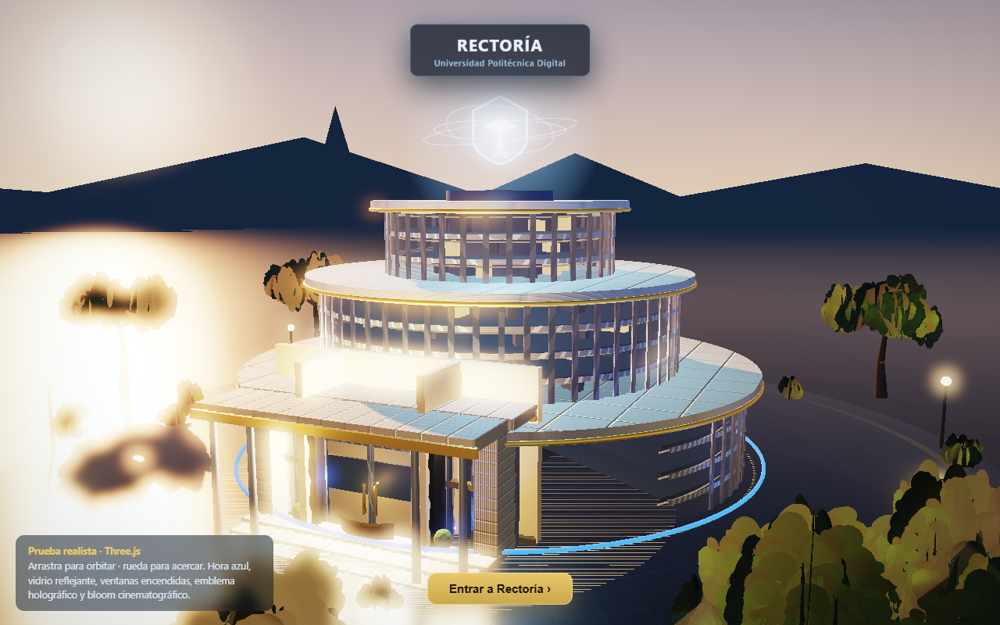
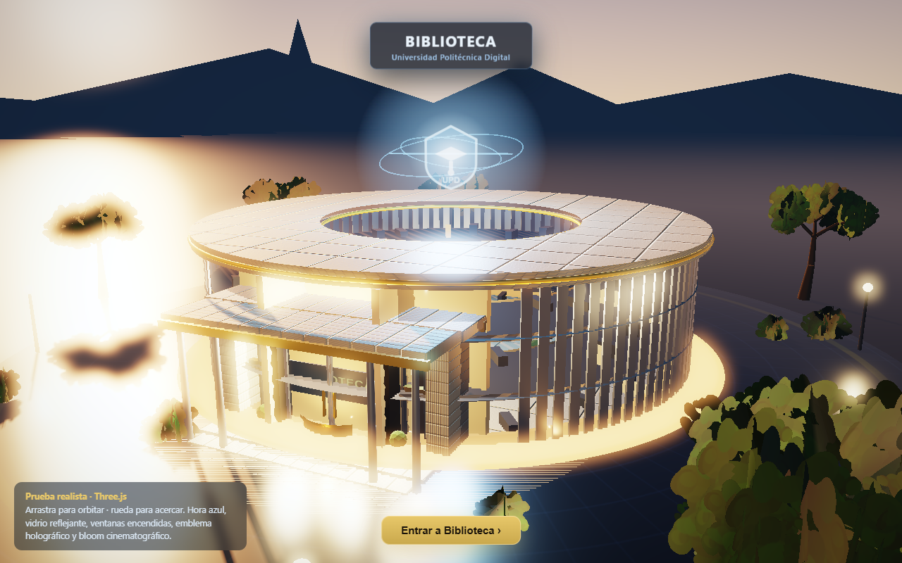
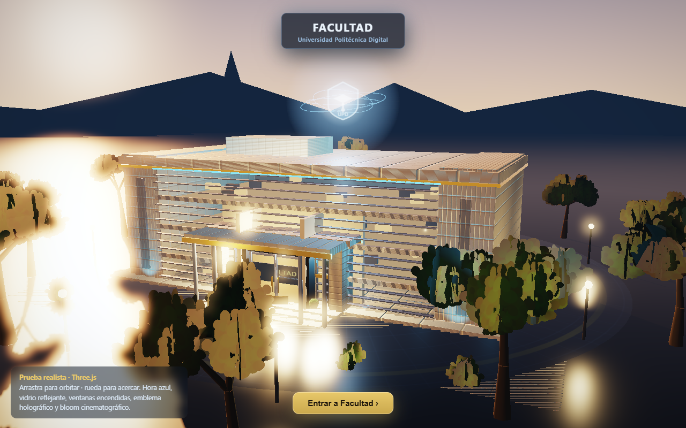
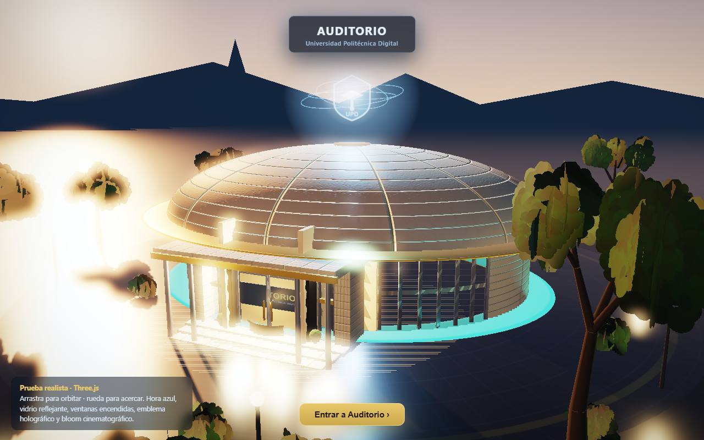
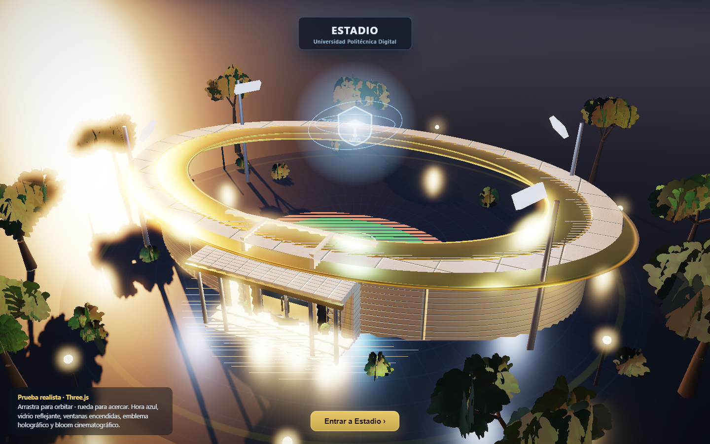
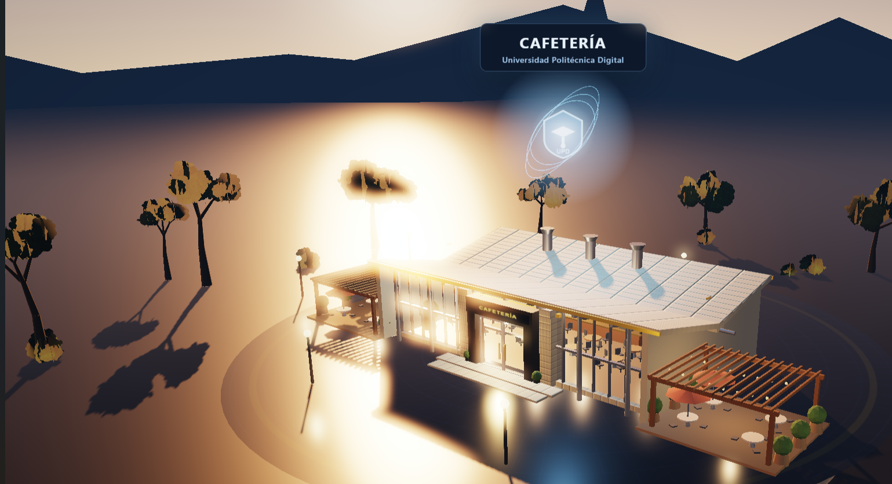
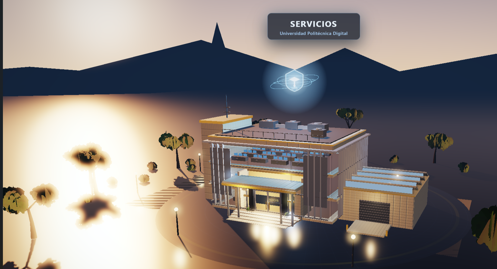

Three.js realista (atardecer · vidrio · bloom). Abre cada uno en pestaña nueva: arrastra para orbitar, rueda para acercar, clic en la puerta para “entrar”. 7 de 7 edificios listos + campus ensamblado.

Torre de vidrio en 3 tramos, emblema holográfico, interior con oficinas.
Abrir en 3D →
Anillo de vidrio con celosías verticales, patio interior con espejo de agua y alero de concreto.
Abrir en 3D →
Bloque académico rectilíneo, muro cortina con aletas horizontales y núcleos de concreto.
Abrir en 3D →
Domo de concreto sobre tambor elíptico, foyer de vidrio curvo y óculo dorado.
Abrir en 3D →
Gradas azules en óvalo, cancha verde con pista, techo voladizo dorado y torres de iluminación.
Abrir en 3D →
Pabellón bajo con techo mariposa, comedor encendido tras el vidrio y terrazas con pérgola de madera.
Abrir en 3D →
Bloque con celosía metálica separada del vidrio, núcleo de concreto, equipo de azotea y nave de talleres.
Abrir en 3D →